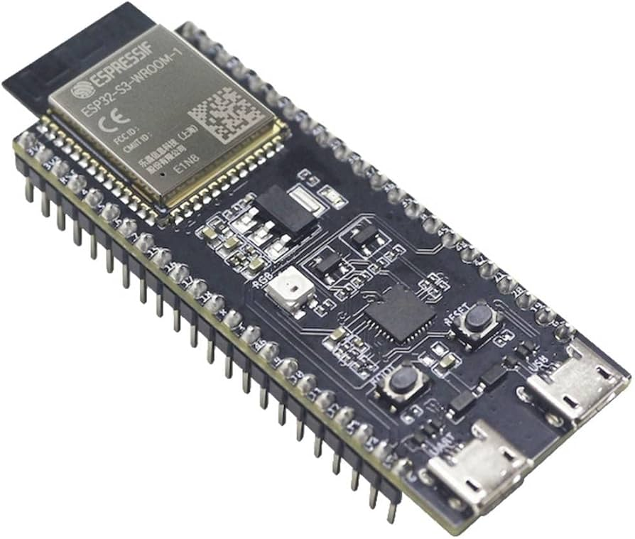
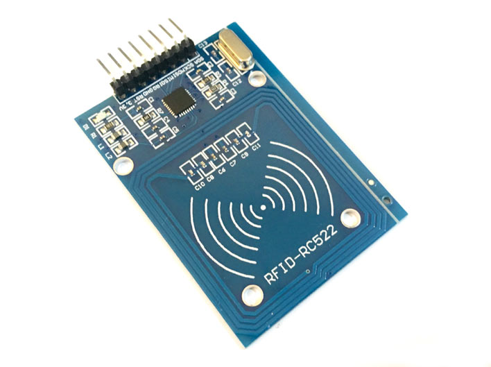
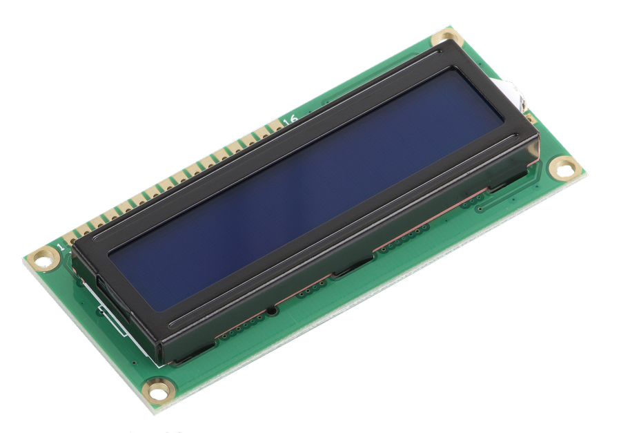

Requirements
This document outlines the hardware and functional requirements for the Smart Time Registration Device. The system is based on an ESP32-S3-DevKitC-1-N8R8 and is designed to handle RFID-based user identification, API communication, provide user interaction through buttons to cycle between actions, LEDs, and a buzzer.
Hardware Components
-
Microcontroller: ESP32-S3-DevKitC-1-N8R8
 -
RFID Sensor: RFID-RC522 for scanning HVA IDs
 -
LCD Display: 16x2 LCD with I2C Backpack
 -
Buzzer: For feedback on card scan
- LEDs: Multiple for system status indication
- Buttons: For switching between actions (e.g., Clock In, Clock Out, Start Break, End Break)
- Connectivity: Wi-Fi for making API calls to the website
Functional Requirements
1. RFID Scanning
- The system will use the RFID-RC522 RFID sensor to scan user HVA IDs.
- Upon scanning, the system will push the ID data via an API call.
2. API Communication
- The ESP32-S3 will connect to the internet to make API calls:
- Send scanned data (RFID) to the server.
- Receive user data (e.g., user name) in response and display on the LCD.
3. Display and Feedback
- The LCD screen, connected via I2C, will show user information and action statuses.
- The buzzer will sound when a card is successfully scanned.
- LEDs will provide status indications for:
- Power (system turned on)
- Internet connectivity (connected/disconnected)
- Card scan status (success/failure)
4. User Input and Actions
- The system will have buttons to switch between different actions:
- Clock In
- Clock Out
- Start Break
- End Break
Inputs and Outputs
| Component | Type | Function |
|---|---|---|
| ESP32-S3-DevKitC-1-N8R8 | MCU | Microcontroller to handle processing and communication. |
| RC522 | Input | Reads RFID cards to identify users. |
| LCD Display | Output | Displays the user name and system statuses. |
| Buzzer | Output | Emits sound on successful card scan. |
| LEDs | Output | Shows system status: Power, Internet Connectivity, and Card Scan result. |
| Buttons | Input | Allows the user to switch between actions (Clock In, Clock Out, etc.). |
System Workflow
- Power On: System starts, LEDs indicate power and system status.
- Internet Connection: LED indicates when the system is connected to the internet.
- RFID Scan: User scans their ID card using the RC522 sensor.
- API Call: The ESP32-S3 sends the RFID data to the server via API.
- API Response: System receives user information and displays it on the LCD screen.
- Action Selection: User selects the action (Clock In/Out, Start/End Break) via buttons.
- Feedback: Buzzer sounds when a card is scanned, LEDs change based on status (e.g., card scan success).
DLO Requirements
| Requirement ID# | Requirement | MoSCoW | Compliant |
|---|---|---|---|
| EMBRQ#01 | The embedded device acts as a client and sends measured sensor data to the application backend over HTTP or HTTPS. | MUST | YES |
| EMBRQ#02 | The embedded device also acts as a server and receives status messages from the application backend over HTTP or HTTPS. | MUST | YES |
| EMBRQ#03 | The embedded device contains at least two types of input sensors (e.g. LDR, buttons, joystick, capacitive touch, etc.). | MUST | YES |
| EMBRQ#04 | The embedded device contains at least two types of visual and/or sensory outputs (e.g. LED, LED Matrix, 7-segment display, motor, servo, actuator, LCD-screen, buzzer, etc.). | MUST | YES |
| EMBRQ#05 | The embedded device uses the WifiManager for configuration of SSID and password (PWD) for connecting to the network. | MUST | YES |
EMBRQ#01
Requirement: The embedded device acts as a client and sends measured sensor data to the application backend over HTTP or HTTPS.
Explanation:
The code uses the HTTPClient library to send data to the backend API. This is implemented through a function that collects temperature and humidity data from the DHT sensor and then sends it using an HTTP POST request to the server.
Code:
1 2 3 4 5 6 7 8 9 10 11 12 13 14 15 16 17 18 19 20 21 22 23 24 25 26 27 | |
EMBRQ#02
Requirement: The embedded device also acts as a server and receives status messages from the application backend over HTTP or HTTPS.
Explanation:
The code uses the ESPAsyncWebServer library to create an HTTP server on the ESP32. The server can receive status messages from the backend, which are processed by specific request handlers.
Code:
1 2 3 4 5 6 7 8 9 10 11 12 13 14 15 16 | |
EMBRQ#03
Requirement: The embedded device contains at least two types of input sensors (e.g. LDR, buttons, joystick, capacitive touch, etc.).
Explanation:
The embedded device uses both an RFID sensor (MFRC522) and a DHT11 sensor as input devices. The RFID sensor is used to read card data, while the DHT11 sensor measures temperature and humidity.
Code:
1 2 3 4 5 6 7 8 9 10 11 12 13 14 15 16 | |
EMBRQ#04
Requirement: The embedded device contains at least two types of visual and/or sensory outputs (e.g. LED, LED Matrix, 7-segment display, motor, servo, actuator, LCD-screen, buzzer, etc.).
Explanation:
The embedded device uses an LCD display (LiquidCrystal_I2C) to show status messages and a buzzer for auditory feedback. The LCD provides visual output, while the buzzer is used for alerts or notifications.
Code:
1 2 3 4 5 6 7 8 9 10 11 12 13 14 15 16 17 18 | |
EMBRQ#05
Requirement: The embedded device uses the WifiManager for configuration of SSID and password (PWD) for connecting to the network.
Explanation:
The WiFiManager library is used to manage the Wi-Fi connection. If no known SSID is found, the device will start an access point, allowing the user to configure the Wi-Fi credentials via a web interface.
Code:
1 2 3 4 5 6 7 | |